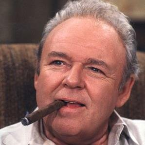

About Me

I was born on May 20, 1924, in Baltimore, Maryland. My parents, Archibald and Sarah Meadows, were freedom loving American kinda peoples. I also have a younger brother, Fred. We was so poor that, when I was a little kid, I had to wear a shoe on one foot and a boot on the other. All the kids at school called me "Shoe-Booty."
During the Great Depression, we moved to New York City, and my father found a job with the Long Island Railroad. I quit high school to help pay for the bills. Then, World War II happened, and I joined the Air Corps. I got shot in the butt when I was serving in Italy over there, and received the Purple Heart and a Good Conduct Medal. When I came back to America, I met my wife, Edith, the Dingbat. I got a job as a foreman at a warehouse and then bought a house for me and Edith, at 704 Hauser Street, in Astoria, Queens.
Me and Edith had a little baby girl, my lovely little Gloria. Gloria and her husband, the Meathead, live with me and Edith, because the Meathead is one of those liberal unemployed peoples. When I'm not working at the warehouse, or working part-time as a cab driver, I like to sit in my chair, drink beer, and watch baseball on the TV. I only have one goal in life: to see the Meathead get a job and move out.
Connect With Me